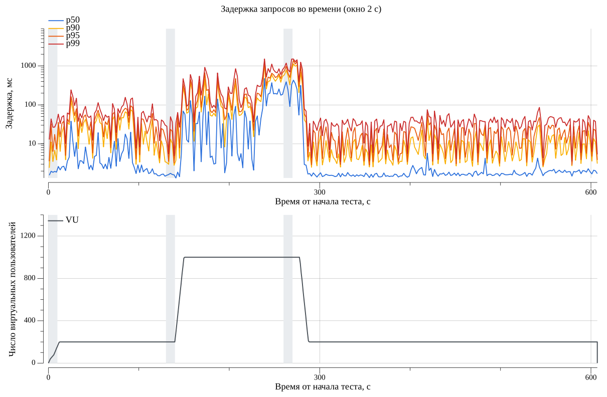
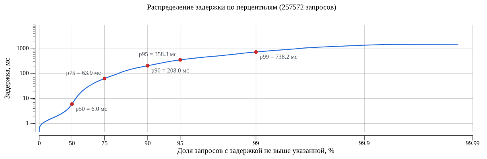
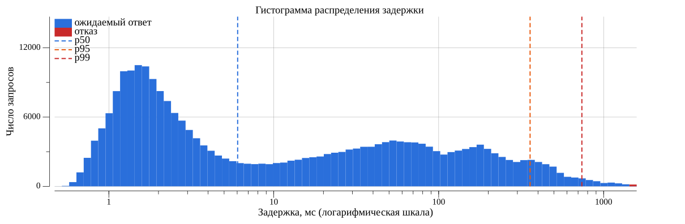
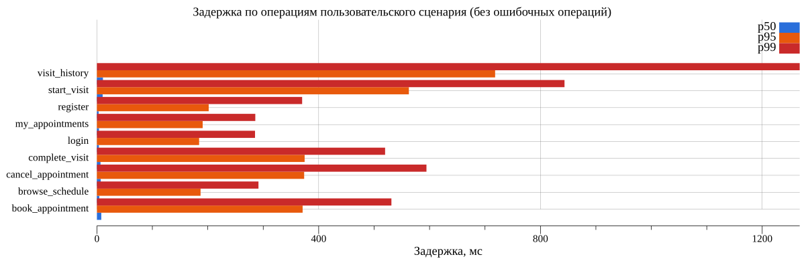
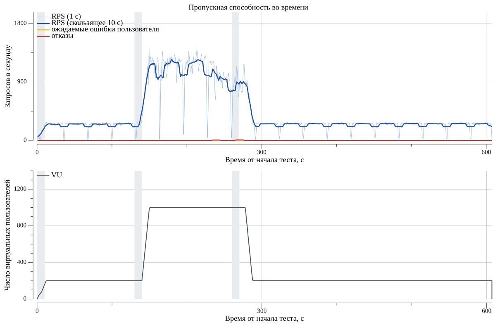
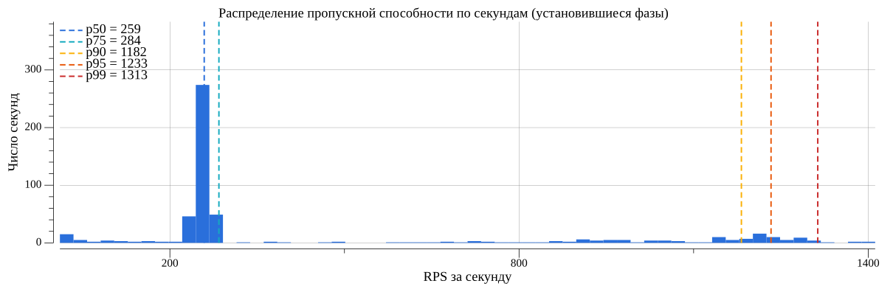
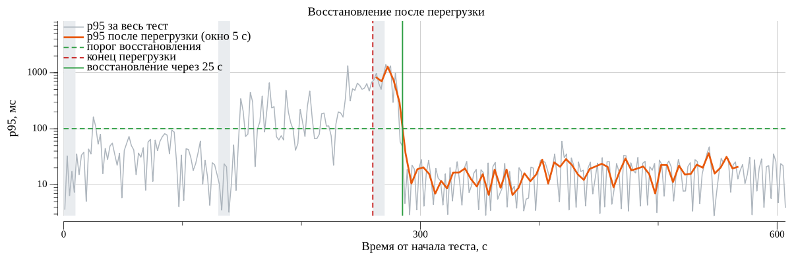
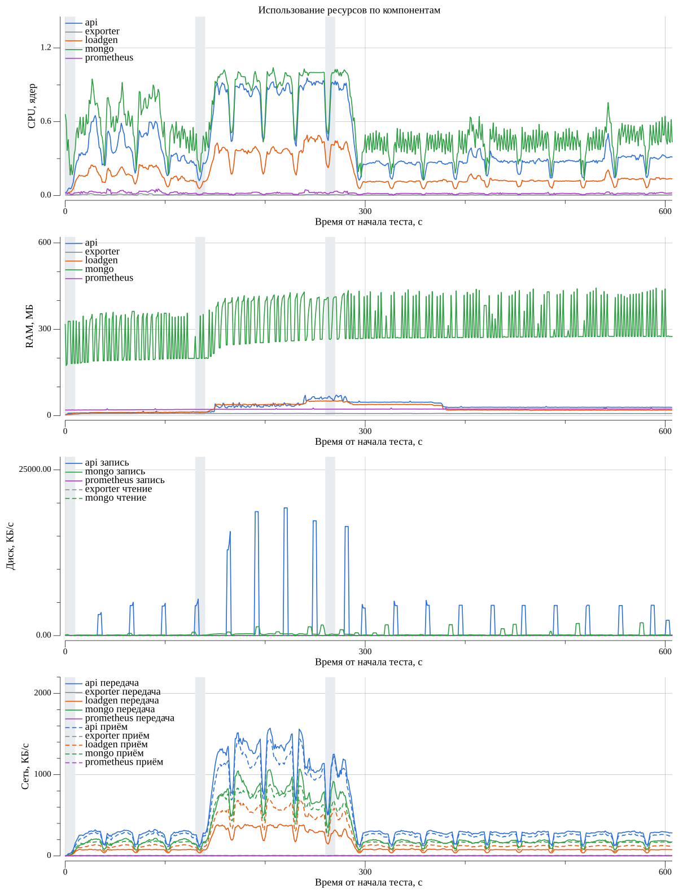

Перегрузка и восстановление
Запросов257571
RPS среднее / медиана424 / 259
p50 / p95 задержки6.04 / 358 мс
p99 задержки738 мс
Отказы0.06%
Ошибочные операции0.00%
Базовая нагрузка: p95 50.2 мс, 246 RPS. Перегрузка: p95 369 мс, отказы 0.0%, 1053 RPS. Восстановление после снятия перегрузки за 25.0 с.
Задержка
| Задержка, мс | count | min | mean | p50 | p75 | p90 | p95 | p99 | max |
|---|---|---|---|---|---|---|---|---|---|
| Все запросы | 257571 | 0.47 | 69.4 | 6.04 | 63.9 | 208 | 358 | 738 | 1571 |
| Корректные операции | 257571 | 0.47 | 69.4 | 6.04 | 63.9 | 208 | 358 | 738 | 1571 |
| Ошибочные операции | 0 | — | — | — | — | — | — | — | — |



Операции пользовательского сценария
| Операция | count | min | mean | p50 | p75 | p90 | p95 | p99 | max | Отказы | Ошибочные |
|---|---|---|---|---|---|---|---|---|---|---|---|
| book_appointment | 37372 | 0.94 | 73.0 | 7.91 | 74.1 | 275 | 371 | 531 | 1177 | 0.00% | 0.00% |
| browse_schedule | 37467 | 0.63 | 38.6 | 4.21 | 45.0 | 135 | 187 | 291 | 775 | 0.00% | 0.00% |
| cancel_appointment | 11212 | 0.86 | 74.0 | 6.86 | 75.6 | 270 | 374 | 594 | 1007 | 0.00% | 0.00% |
| complete_visit | 25826 | 0.85 | 72.1 | 6.48 | 72.9 | 271 | 375 | 520 | 1088 | 0.00% | 0.00% |
| login | 37595 | 0.47 | 37.9 | 3.57 | 44.9 | 133 | 184 | 285 | 752 | 0.00% | 0.00% |
| my_appointments | 37265 | 0.56 | 38.6 | 3.75 | 44.9 | 137 | 191 | 286 | 740 | 0.00% | 0.00% |
| register | 7993 | 0.53 | 40.3 | 3.11 | 46.6 | 142 | 202 | 370 | 714 | 0.00% | 0.00% |
| start_visit | 25933 | 1.20 | 110 | 10.3 | 106 | 416 | 563 | 843 | 1444 | 0.00% | 0.00% |
| visit_history | 36909 | 0.90 | 135 | 10.9 | 133 | 458 | 718 | 1268 | 1571 | 0.42% | 0.00% |

Пропускная способность
| Показатель | count | min | mean | p50 | p75 | p90 | p95 | p99 | max |
|---|---|---|---|---|---|---|---|---|---|
| RPS за секунду | 608 | 0.00 | 424 | 259 | 279 | 1157 | 1230 | 1306 | 1411 |


Фазы нагрузки
| Участок | VU | RPS ср. | RPS p50 | RPS p5 | p50 мс | p95 мс | p99 мс | Отказы | CPU api | CPU mongo | RAM api, МБ | SLO |
|---|---|---|---|---|---|---|---|---|---|---|---|---|
| разгон | 200 | 97.8 | 100 | 1.80 | 1.87 | 12.9 | 33.6 | 0.00% | 0.09 | 0.32 | 8.10 | да |
| базовая нагрузка | 200 | 242 | 253 | 212 | 2.90 | 50.0 | 89.9 | 0.00% | 0.39 | 0.60 | 11.3 | да |
| рост | 1000 | 208 | 252 | 24.9 | 1.63 | 13.6 | 35.6 | 0.00% | 0.20 | 0.35 | 11.8 | да |
| перегрузка | 1000 | 1053 | 1158 | 387 | 37.8 | 369 | 673 | 0.05% | 0.80 | 0.88 | 37.8 | да |
| спад | 200 | 838 | 878 | 457 | 235 | 763 | 1121 | 0.21% | 0.73 | 0.80 | 61.0 | нет |
| восстановление | 200 | 273 | 256 | 98.7 | 1.88 | 295 | 891 | 0.09% | 0.30 | 0.45 | 36.2 | да |
Перегрузка и восстановление
| Участок | VU | RPS ср. | RPS p50 | RPS p5 | p50 мс | p95 мс | p99 мс | Отказы | CPU api | CPU mongo | RAM api, МБ | SLO |
|---|---|---|---|---|---|---|---|---|---|---|---|---|
| эталон | 200 | 246 | 253 | 225 | 2.59 | 50.2 | 86.0 | 0.00% | 0.38 | 0.58 | 11.9 | да |
| перегрузка | 1000 | 1053 | 1158 | 387 | 37.8 | 369 | 673 | 0.05% | 0.80 | 0.88 | 37.8 | да |
| после | 200 | 243 | 256 | 64.3 | 1.77 | 22.0 | 42.4 | 0.00% | 0.28 | 0.44 | 29.3 | да |

Использование ресурсов
| Компонент | Метрика | min | max | mean | median | p95 |
|---|---|---|---|---|---|---|
| api | CPU, ядер | 0.02 | 0.96 | 0.42 | 0.30 | 0.91 |
| api | Троттлинг CPU, с/с | 0.00 | 0.27 | 0.02 | 0.00 | 0.10 |
| api | Чтение с диска, КБ/с | 0.00 | 0.00 | 0.00 | 0.00 | 0.00 |
| api | Запись на диск, КБ/с | 0.00 | 19271 | 995 | 0.00 | 4581 |
| api | RAM (working set), МБ | 4.66 | 71.6 | 30.7 | 29.4 | 59.2 |
| api | Сеть, приём КБ/с | 3.08 | 1441 | 429 | 261 | 1227 |
| api | Сеть, передача КБ/с | 4.08 | 1572 | 481 | 294 | 1383 |
| api | Процессы и потоки | 7.00 | 17.0 | 10.0 | 10.0 | 10.0 |
| exporter | CPU, ядер | 0.00 | 0.02 | 0.00 | 0.00 | 0.01 |
| exporter | Троттлинг CPU, с/с | 0.00 | 0.00 | 0.00 | 0.00 | 0.00 |
| exporter | Чтение с диска, КБ/с | 0.00 | 40.8 | 0.07 | 0.00 | 0.00 |
| exporter | Запись на диск, КБ/с | 0.00 | 0.00 | 0.00 | 0.00 | 0.00 |
| exporter | RAM (working set), МБ | 3.10 | 7.96 | 7.47 | 7.58 | 7.91 |
| exporter | Сеть, приём КБ/с | 0.24 | 0.53 | 0.45 | 0.48 | 0.48 |
| exporter | Сеть, передача КБ/с | 1.98 | 4.04 | 3.75 | 4.03 | 4.04 |
| exporter | Процессы и потоки | 4.00 | 6.00 | 5.61 | 6.00 | 6.00 |
| loadgen | CPU, ядер | 0.01 | 0.49 | 0.18 | 0.13 | 0.41 |
| loadgen | Троттлинг CPU, с/с | 0.00 | 0.00 | 0.00 | 0.00 | 0.00 |
| loadgen | Чтение с диска, КБ/с | 0.00 | 0.00 | 0.00 | 0.00 | 0.00 |
| loadgen | Запись на диск, КБ/с | 0.00 | 0.00 | 0.00 | 0.00 | 0.00 |
| loadgen | RAM (working set), МБ | 3.25 | 53.8 | 25.6 | 19.8 | 50.0 |
| loadgen | Сеть, приём КБ/с | 6.59 | 704 | 209 | 125 | 598 |
| loadgen | Сеть, передача КБ/с | 5.57 | 390 | 129 | 77.7 | 373 |
| loadgen | Процессы и потоки | 7.00 | 9.00 | 8.93 | 9.00 | 9.00 |
| mongo | CPU, ядер | 0.12 | 1.04 | 0.57 | 0.51 | 1.00 |
| mongo | Троттлинг CPU, с/с | 0.00 | 1.16 | 0.33 | 0.19 | 1.10 |
| mongo | Чтение с диска, КБ/с | 0.00 | 148 | 0.86 | 0.00 | 0.00 |
| mongo | Запись на диск, КБ/с | 30.2 | 1936 | 223 | 96.0 | 1237 |
| mongo | RAM (working set), МБ | 174 | 443 | 304 | 275 | 429 |
| mongo | Сеть, приём КБ/с | 2.76 | 881 | 273 | 169 | 786 |
| mongo | Сеть, передача КБ/с | 1.28 | 1066 | 301 | 185 | 867 |
| mongo | Процессы и потоки | 40.0 | 154 | 124 | 137 | 150 |
| prometheus | CPU, ядер | 0.00 | 0.05 | 0.02 | 0.02 | 0.03 |
| prometheus | Троттлинг CPU, с/с | 0.00 | 0.00 | 0.00 | 0.00 | 0.00 |
| prometheus | Чтение с диска, КБ/с | 0.00 | 0.00 | 0.00 | 0.00 | 0.00 |
| prometheus | Запись на диск, КБ/с | 0.00 | 8.89 | 0.76 | 0.00 | 7.00 |
| prometheus | RAM (working set), МБ | 19.5 | 27.3 | 22.5 | 22.8 | 23.4 |
| prometheus | Сеть, приём КБ/с | 1.99 | 6.73 | 5.70 | 6.17 | 6.19 |
| prometheus | Сеть, передача КБ/с | 0.24 | 1.11 | 0.89 | 0.96 | 0.99 |
| prometheus | Процессы и потоки | 8.00 | 15.0 | 8.08 | 8.00 | 8.00 |

Коды ответов
| Код | Запросов |
|---|---|
| 200 | 186119 |
| 201 | 71298 |
| 500 | 154 |
Окружение прогона
| Компонент | Логические CPU | Квота CPU | Резерв RAM, МБ | Лимит RAM, МБ | Образ | ID образа |
|---|---|---|---|---|---|---|
| api | 0,1 | 1 | 512 | 512 | vitaline-lab6-api:20261115-210338-stress-kq4g | 579b68ac81b6 |
| exporter | 6,7 | — | 64 | 64 | vitaline-lab4-exporter:1 | 1d23c3f2327d |
| loadgen | 4,5 | — | 2048 | 2048 | vitaline-lab4-loadgen:1 | 48e1046c6d0e |
| mongo | 2,3 | 1 | 1024 | 1024 | mongo:7 | 9896df581dfd |
| prometheus | 6,7 | — | 768 | 768 | prom/prometheus:v3.5.0 | 63805ebb8d2b |